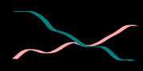

Γεια σου 👋, με λÎνε ΣτÎλιο!
Είμαι Îνας προπτυχιακός φοιτητής του τμήματος Στατιστικής και Ασφαλιστικής Επιστήμης στο Πανεπιστήμιο Πειραιά. Στην ιστοσελίδα μου θα αναρτώ Î´Î¹Î¬Ï†Î¿Ïα άρθρα σχετικά με την Στατιστική και την γλώσσα . Επίσης, μπορείτε να ρίξετε μία ματιά στις εφαÏμογÎÏ‚ και τα γραφήματά μου.